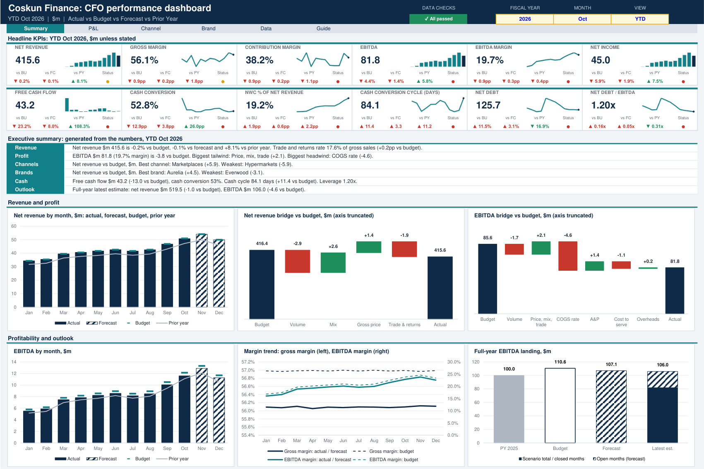

Performance reporting
CFO Performance Dashboard
A linked pack for a finance director or CFO who wants one view of actuals against budget, forecast and prior year.
You load one flat data table and every page recalculates from it. A year, month and view selector moves the whole pack between month, year to date and full-year outlook, where the outlook is actuals plus the remaining forecast.
What is inside
- Summary: 12 KPI cards, an executive summary that writes itself from the numbers, 15 charts and a 30-KPI scorecard
- P&L: month, year to date and full year against budget, with line commentary and a risks and opportunities table
- Channel and Brand: ranked scorecards, P&L, price, volume and mix analysis, heatmaps and a one-click focus view
- Data: one table for actuals, budget, forecast and prior year
- Guide: KPI definitions and 14 live integrity checks
Best for
Monthly business reviews and board packs where the question is how we are doing against plan.
7 tabs40 chartsNo macros
Download Excel (0.7 MB)